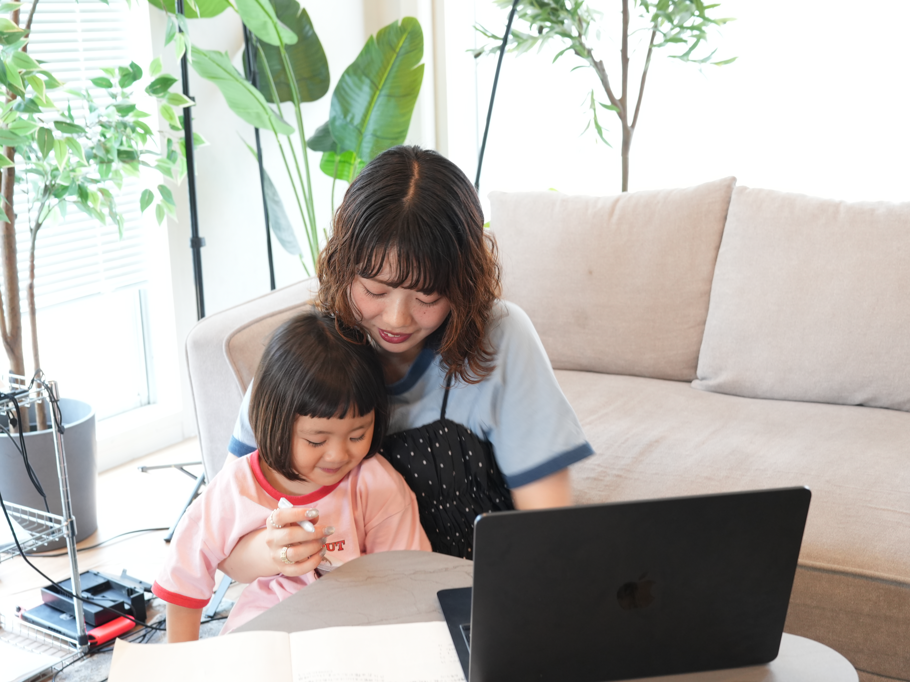

01
個別診断で最適な選択を
性格・ライフスタイル・目標から、あなたにぴったりの在宅ワークを一緒に考えます。「何から始めればいいかわからない」という方も安心。

Mama Support
子育て中のママが、自分のペースで在宅ワークを始めるための
個別サポートサービスです。累計1,000名以上の支援実績をもとに、
あなたに合ったスキルと働き方をご提案します。
About
性格・ライフスタイル・目標から、あなたにぴったりの在宅ワークを一緒に考えます。「何から始めればいいかわからない」という方も安心。

LINE・Zoomで毎日質問OK（回数制限なし）。子どもが寝た後でも気軽に相談できます。忙しいママのリズムに寄り添います。
パソコンがなくても大丈夫。Instagram運用などスマホだけで始められる在宅ワークもご提案できます。特別な機材は不要です。
Flow
LINEを追加するだけで始められます。
あなたに合った在宅ワークが分かる診断をお届けします。
気になった方はLINEで個別相談をご予約いただけます。
あなたに合ったペースで在宅ワークを始めます。
FAQ
はい、大丈夫です。Instagram運用などスマホだけで始められる在宅ワークもご提案できます。
お子さんが寝ている時間やすきま時間を活用して、少しずつ進められるプランをご用意しています。
LINE登録・在宅ワーク診断・初回の個別相談は無料です。詳しいサービス内容や料金については、個別相談の際にご説明いたします。
あなたに合った在宅ワークが分かる診断コンテンツをお届けします。その後、ご希望の方には個別相談のご案内をお送りします。
もちろん大丈夫です。多くの受講生が育休中にスタートしています。基礎からしっかりサポートいたします。
累計1,000名以上のママを支援してきた実績と、一人ひとりに合わせた個別診断が特徴です。あなたの状況に最適な在宅ワークをご提案します。